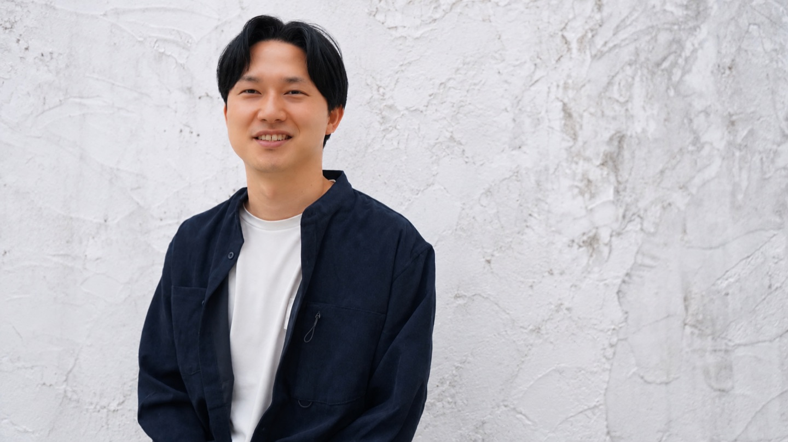

後回しにした
自分の気持ち、
見つめてみませんか。
瞑想で心を落ち着け、カードで気持ちを言葉にし、対話で自分をいたわる60分。
一人で抱えてきた気持ちを、ほどく時間です。
60分／個別／初回無料
対面（白金高輪）・オンライン
チラシをご覧の方へ。所要60分です。
その場で何かを決める必要はありません。
気づけば、
自分のことは
後回しに
なっていませんか。
- 自分のことは、後回し。
- 不安になることが増えた。
- 自分の時間のつくり方が分からない。
がんばっているのに、
気持ちが置いていかれる。
心が弱いからではありません。
立ち止まる時間を持てていないだけです。
この60分は、自分の気持ちに目を向ける時間です。
「心の整体」ですること
マインドフルネス瞑想
呼吸や身体の感覚に、意識を向けます。
頭の忙しさから、少し離れる時間です。
うまくできなくて構いません。
感情を表す
「えもっちカード」
気持ちを表すカードから、今の自分に近いものを選びます。
言葉にしにくい感情の手がかりになります。
寄り添う対話
選んだカードをきっかけに話します。
まとめようとしなくて大丈夫です。
※写真はイメージです。
60分の流れ
-
15分
自己紹介・導入
自己紹介と、今の気分やこの時間に期待することを伺います。話しやすい空気をつくる時間です。
-
10分
マインドフルネス瞑想
呼吸と身体の感覚に意識を向けます。目を閉じなくても大丈夫です。
-
10分
えもっちカード
今の気持ちに近いカードを選びます。ぴったりのものがなければ、選ばなくて構いません。
-
20分
寄り添う対話
カードをきっかけに、気持ちとその背景を一緒にたどります。
-
5分
振り返りと言葉の整理
始める前との違い、今の自分に残った言葉を確かめます。
持ち帰るのは、
自分のための言葉
- 今の自分が何を感じていたかに、気づいた言葉
- これからの日常で意識したいこと
- 次にどうしたいかという選択肢
気づきを持ち帰るだけで十分です。
ファシリテーター

江島 智滉（えじま ともひろ）／EJI
伴走型コーチ
広告代理店でディレクターを経験した後、ヘルスケアスタートアップでプロジェクトマネージャー・事業責任者としてプロダクト開発やチームマネジメントに従事。現在は、コーチング・マインドフルネス・EQを通じて、まだ言葉になっていない想いを一緒に整理する対話を提供しています。
関わり方
- 急かしません。結論が出ていない状態から話せます
- 表情、声の変化、沈黙、繰り返される言葉まで受け取ります
- 見立てを押しつけず、本人が納得できる答えを選べる余白を残します
資格
6seconds認定 EQエデュケーター1
よくある質問
Q.はっきりした悩みがなくても、参加していいですか。
A.大丈夫です。「なんとなく疲れている」「少し立ち止まりたい」という理由で構いません。
Q.何を話せばいいか分かりません。
A.話す内容を決めてくる必要はありません。瞑想とカードから始めるので、言葉が出てこなくても大丈夫です。
Q.瞑想が初めてで、うまくできるか不安です。
A.うまくやる必要はありません。目を閉じるのが苦手な場合は、開けたままで構いません。
Q.カウンセリングや治療とは違うのですか。
A.違います。心の整体は対話と短い瞑想の時間で、体に触れること、治療、診断、評価は行いません。
Q.話した内容が外に出ることはありますか。
A.ありません。セッションで話した内容を、本人の同意なく外部に共有することはありません。
Q.子ども連れでも参加できますか。
A.ご相談ください。参加方法に合わせて調整します。
Q.初対面の男性と1対1で話すのが不安です。
A.対面とオンラインを選べます。人目のある場所がよい、画面越しがよいなど、ご希望に合わせて選んでいただけます。
Q.2回目以降はいくらですか。
A.試験導入中のため、ご提供内容に基づいて改めてご案内いたします。初回は無料で受けられます。
Q.予約はどう進みますか。
A.予約ページで日時を選んでください。対面の場合、会場の詳細は日程調整後にご連絡します。
開催概要
- 内容
- 心の整体｜対話で気持ちを整える時間（60分・個別）
- 料金
- 初回無料。2回目以降の料金は、試験導入中のため、ご提供内容に基づいて改めてご案内いたします。
- 所要時間
- 60分
- 形式・場所
- 対面（白金高輪周辺）／オンライン。対面の会場詳細は日程調整後にご連絡します。
- 日程
- ご予約時に調整します。
- 対象
- 小学生・中学生の子どもを持つ母親
60分だけ、
試してみませんか。
自分のために使う60分は、
後回しにしなくて大丈夫です。
予約ページで日時を選べます。
対面の場合、会場の詳細は日程調整後にご連絡します。